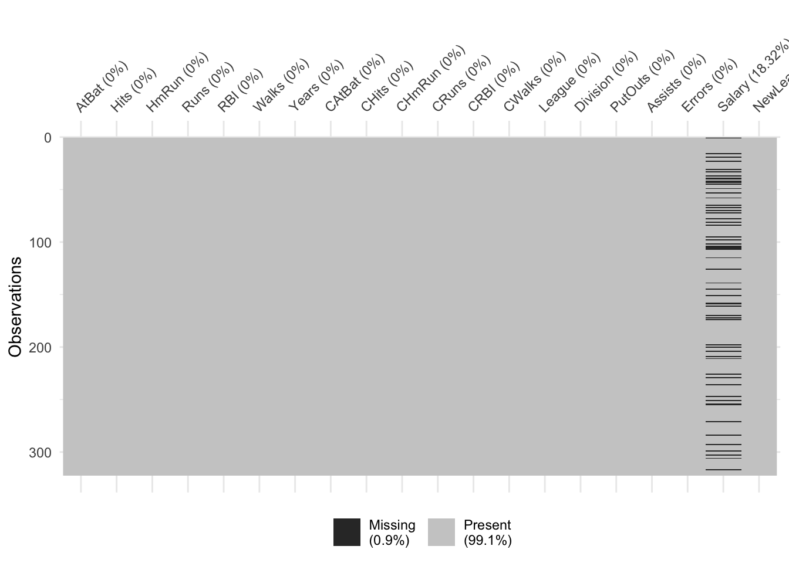
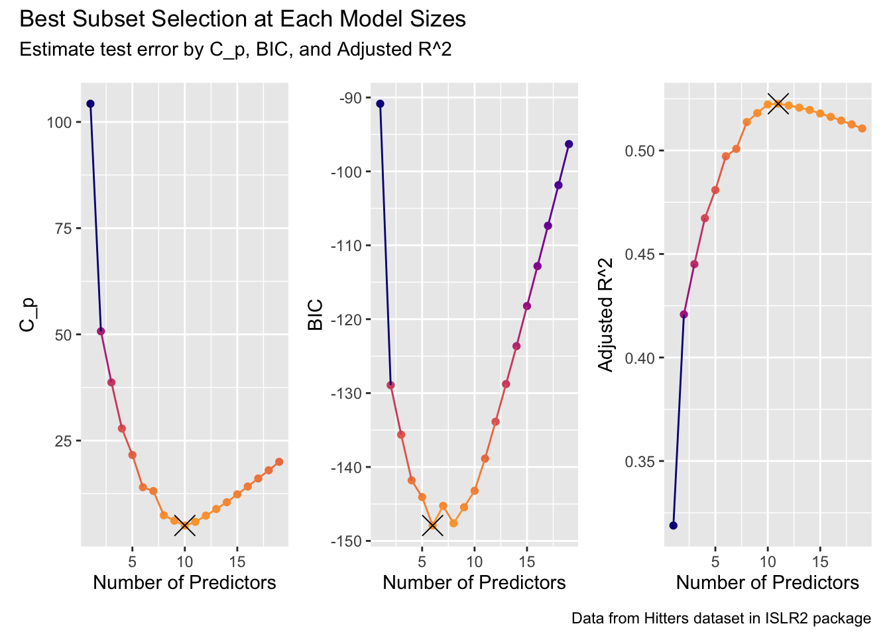
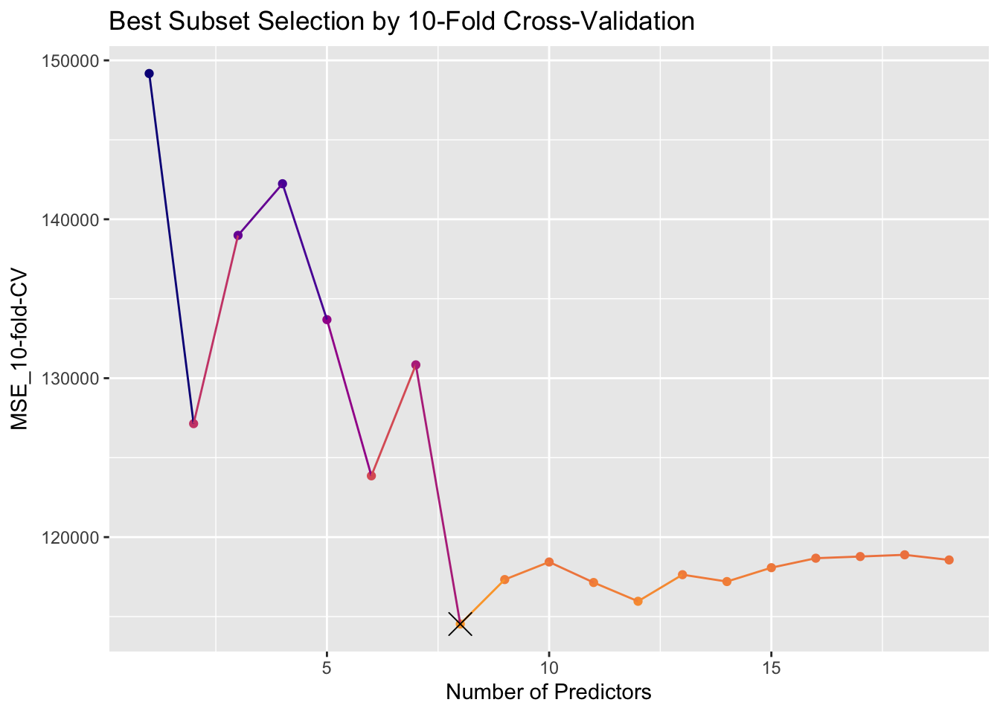
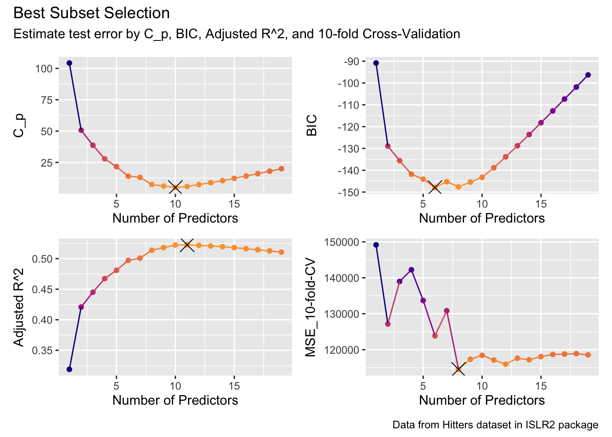

Code
library(tidyverse)
library(ISLR2) # For Dataset
library(leaps)
theme_set(theme_bw())An example to perform variable selection using best subset selection method for a linear regression model in R by implementing: tidy-styled functions.
This is a repost from R-Pub.
library(tidyverse)
library(ISLR2) # For Dataset
library(leaps)
theme_set(theme_bw())I will use Hitters dataset from {ISLR2} package [1].
Let’s see what we’ve got.
The goal here is to predict variable Salary.
names(Hitters) [1] "AtBat" "Hits" "HmRun" "Runs" "RBI" "Walks"
[7] "Years" "CAtBat" "CHits" "CHmRun" "CRuns" "CRBI"
[13] "CWalks" "League" "Division" "PutOuts" "Assists" "Errors"
[19] "Salary" "NewLeague"dim(Hitters)[1] 322 20skimr::skim(Hitters)| Name | Hitters |
| Number of rows | 322 |
| Number of columns | 20 |
| _______________________ | |
| Column type frequency: | |
| factor | 3 |
| numeric | 17 |
| ________________________ | |
| Group variables | None |
Variable type: factor
| skim_variable | n_missing | complete_rate | ordered | n_unique | top_counts |
|---|---|---|---|---|---|
| League | 0 | 1 | FALSE | 2 | A: 175, N: 147 |
| Division | 0 | 1 | FALSE | 2 | W: 165, E: 157 |
| NewLeague | 0 | 1 | FALSE | 2 | A: 176, N: 146 |
Variable type: numeric
| skim_variable | n_missing | complete_rate | mean | sd | p0 | p25 | p50 | p75 | p100 | hist |
|---|---|---|---|---|---|---|---|---|---|---|
| AtBat | 0 | 1.00 | 380.93 | 153.40 | 16.0 | 255.25 | 379.5 | 512.00 | 687 | ▁▇▇▇▅ |
| Hits | 0 | 1.00 | 101.02 | 46.45 | 1.0 | 64.00 | 96.0 | 137.00 | 238 | ▃▇▆▃▁ |
| HmRun | 0 | 1.00 | 10.77 | 8.71 | 0.0 | 4.00 | 8.0 | 16.00 | 40 | ▇▃▂▁▁ |
| Runs | 0 | 1.00 | 50.91 | 26.02 | 0.0 | 30.25 | 48.0 | 69.00 | 130 | ▅▇▆▃▁ |
| RBI | 0 | 1.00 | 48.03 | 26.17 | 0.0 | 28.00 | 44.0 | 64.75 | 121 | ▃▇▃▃▁ |
| Walks | 0 | 1.00 | 38.74 | 21.64 | 0.0 | 22.00 | 35.0 | 53.00 | 105 | ▅▇▅▂▁ |
| Years | 0 | 1.00 | 7.44 | 4.93 | 1.0 | 4.00 | 6.0 | 11.00 | 24 | ▇▆▃▂▁ |
| CAtBat | 0 | 1.00 | 2648.68 | 2324.21 | 19.0 | 816.75 | 1928.0 | 3924.25 | 14053 | ▇▃▂▁▁ |
| CHits | 0 | 1.00 | 717.57 | 654.47 | 4.0 | 209.00 | 508.0 | 1059.25 | 4256 | ▇▃▁▁▁ |
| CHmRun | 0 | 1.00 | 69.49 | 86.27 | 0.0 | 14.00 | 37.5 | 90.00 | 548 | ▇▁▁▁▁ |
| CRuns | 0 | 1.00 | 358.80 | 334.11 | 1.0 | 100.25 | 247.0 | 526.25 | 2165 | ▇▂▁▁▁ |
| CRBI | 0 | 1.00 | 330.12 | 333.22 | 0.0 | 88.75 | 220.5 | 426.25 | 1659 | ▇▂▁▁▁ |
| CWalks | 0 | 1.00 | 260.24 | 267.06 | 0.0 | 67.25 | 170.5 | 339.25 | 1566 | ▇▂▁▁▁ |
| PutOuts | 0 | 1.00 | 288.94 | 280.70 | 0.0 | 109.25 | 212.0 | 325.00 | 1378 | ▇▃▁▁▁ |
| Assists | 0 | 1.00 | 106.91 | 136.85 | 0.0 | 7.00 | 39.5 | 166.00 | 492 | ▇▂▁▁▁ |
| Errors | 0 | 1.00 | 8.04 | 6.37 | 0.0 | 3.00 | 6.0 | 11.00 | 32 | ▇▅▂▁▁ |
| Salary | 59 | 0.82 | 535.93 | 451.12 | 67.5 | 190.00 | 425.0 | 750.00 | 2460 | ▇▃▁▁▁ |
Let’s remove rows containg missing values.
visdat::vis_miss(Hitters)Warning: `gather_()` was deprecated in tidyr 1.2.0.
ℹ Please use `gather()` instead.
ℹ The deprecated feature was likely used in the visdat package.
Please report the issue at <https://github.com/ropensci/visdat/issues>.
Hitters <- Hitters %>% na.omit()
sum(is.na(Hitters$Salary))[1] 0Which combinations of variables gives the lowest test error rate at each model sizes?
regfit.full <- leaps::regsubsets(Salary ~ ., Hitters)
summary(regfit.full)Subset selection object
Call: regsubsets.formula(Salary ~ ., Hitters)
19 Variables (and intercept)
Forced in Forced out
AtBat FALSE FALSE
Hits FALSE FALSE
HmRun FALSE FALSE
Runs FALSE FALSE
RBI FALSE FALSE
Walks FALSE FALSE
Years FALSE FALSE
CAtBat FALSE FALSE
CHits FALSE FALSE
CHmRun FALSE FALSE
CRuns FALSE FALSE
CRBI FALSE FALSE
CWalks FALSE FALSE
LeagueN FALSE FALSE
DivisionW FALSE FALSE
PutOuts FALSE FALSE
Assists FALSE FALSE
Errors FALSE FALSE
NewLeagueN FALSE FALSE
1 subsets of each size up to 8
Selection Algorithm: exhaustive
AtBat Hits HmRun Runs RBI Walks Years CAtBat CHits CHmRun CRuns CRBI
1 ( 1 ) " " " " " " " " " " " " " " " " " " " " " " "*"
2 ( 1 ) " " "*" " " " " " " " " " " " " " " " " " " "*"
3 ( 1 ) " " "*" " " " " " " " " " " " " " " " " " " "*"
4 ( 1 ) " " "*" " " " " " " " " " " " " " " " " " " "*"
5 ( 1 ) "*" "*" " " " " " " " " " " " " " " " " " " "*"
6 ( 1 ) "*" "*" " " " " " " "*" " " " " " " " " " " "*"
7 ( 1 ) " " "*" " " " " " " "*" " " "*" "*" "*" " " " "
8 ( 1 ) "*" "*" " " " " " " "*" " " " " " " "*" "*" " "
CWalks LeagueN DivisionW PutOuts Assists Errors NewLeagueN
1 ( 1 ) " " " " " " " " " " " " " "
2 ( 1 ) " " " " " " " " " " " " " "
3 ( 1 ) " " " " " " "*" " " " " " "
4 ( 1 ) " " " " "*" "*" " " " " " "
5 ( 1 ) " " " " "*" "*" " " " " " "
6 ( 1 ) " " " " "*" "*" " " " " " "
7 ( 1 ) " " " " "*" "*" " " " " " "
8 ( 1 ) "*" " " "*" "*" " " " " " " Try to include all predictors; I will increase nvmax.
regfit.full <- regsubsets(Salary ~ ., data = Hitters,
nvmax = 19)
reg.summary <- summary(regfit.full)
reg.summary Subset selection object
Call: regsubsets.formula(Salary ~ ., data = Hitters, nvmax = 19)
19 Variables (and intercept)
Forced in Forced out
AtBat FALSE FALSE
Hits FALSE FALSE
HmRun FALSE FALSE
Runs FALSE FALSE
RBI FALSE FALSE
Walks FALSE FALSE
Years FALSE FALSE
CAtBat FALSE FALSE
CHits FALSE FALSE
CHmRun FALSE FALSE
CRuns FALSE FALSE
CRBI FALSE FALSE
CWalks FALSE FALSE
LeagueN FALSE FALSE
DivisionW FALSE FALSE
PutOuts FALSE FALSE
Assists FALSE FALSE
Errors FALSE FALSE
NewLeagueN FALSE FALSE
1 subsets of each size up to 19
Selection Algorithm: exhaustive
AtBat Hits HmRun Runs RBI Walks Years CAtBat CHits CHmRun CRuns CRBI
1 ( 1 ) " " " " " " " " " " " " " " " " " " " " " " "*"
2 ( 1 ) " " "*" " " " " " " " " " " " " " " " " " " "*"
3 ( 1 ) " " "*" " " " " " " " " " " " " " " " " " " "*"
4 ( 1 ) " " "*" " " " " " " " " " " " " " " " " " " "*"
5 ( 1 ) "*" "*" " " " " " " " " " " " " " " " " " " "*"
6 ( 1 ) "*" "*" " " " " " " "*" " " " " " " " " " " "*"
7 ( 1 ) " " "*" " " " " " " "*" " " "*" "*" "*" " " " "
8 ( 1 ) "*" "*" " " " " " " "*" " " " " " " "*" "*" " "
9 ( 1 ) "*" "*" " " " " " " "*" " " "*" " " " " "*" "*"
10 ( 1 ) "*" "*" " " " " " " "*" " " "*" " " " " "*" "*"
11 ( 1 ) "*" "*" " " " " " " "*" " " "*" " " " " "*" "*"
12 ( 1 ) "*" "*" " " "*" " " "*" " " "*" " " " " "*" "*"
13 ( 1 ) "*" "*" " " "*" " " "*" " " "*" " " " " "*" "*"
14 ( 1 ) "*" "*" "*" "*" " " "*" " " "*" " " " " "*" "*"
15 ( 1 ) "*" "*" "*" "*" " " "*" " " "*" "*" " " "*" "*"
16 ( 1 ) "*" "*" "*" "*" "*" "*" " " "*" "*" " " "*" "*"
17 ( 1 ) "*" "*" "*" "*" "*" "*" " " "*" "*" " " "*" "*"
18 ( 1 ) "*" "*" "*" "*" "*" "*" "*" "*" "*" " " "*" "*"
19 ( 1 ) "*" "*" "*" "*" "*" "*" "*" "*" "*" "*" "*" "*"
CWalks LeagueN DivisionW PutOuts Assists Errors NewLeagueN
1 ( 1 ) " " " " " " " " " " " " " "
2 ( 1 ) " " " " " " " " " " " " " "
3 ( 1 ) " " " " " " "*" " " " " " "
4 ( 1 ) " " " " "*" "*" " " " " " "
5 ( 1 ) " " " " "*" "*" " " " " " "
6 ( 1 ) " " " " "*" "*" " " " " " "
7 ( 1 ) " " " " "*" "*" " " " " " "
8 ( 1 ) "*" " " "*" "*" " " " " " "
9 ( 1 ) "*" " " "*" "*" " " " " " "
10 ( 1 ) "*" " " "*" "*" "*" " " " "
11 ( 1 ) "*" "*" "*" "*" "*" " " " "
12 ( 1 ) "*" "*" "*" "*" "*" " " " "
13 ( 1 ) "*" "*" "*" "*" "*" "*" " "
14 ( 1 ) "*" "*" "*" "*" "*" "*" " "
15 ( 1 ) "*" "*" "*" "*" "*" "*" " "
16 ( 1 ) "*" "*" "*" "*" "*" "*" " "
17 ( 1 ) "*" "*" "*" "*" "*" "*" "*"
18 ( 1 ) "*" "*" "*" "*" "*" "*" "*"
19 ( 1 ) "*" "*" "*" "*" "*" "*" "*" We can use plot() to show predictors included at each Cp, BIC, or Adjusted R-squared.
plot(regfit.full, scale = "Cp")
broom::tidy() can also be used in regsubsets class
regfit_tidy <- broom::tidy(regfit.full)
regfit_tidy # A tibble: 19 × 24
`(Intercept)` AtBat Hits HmRun Runs RBI Walks Years CAtBat CHits CHmRun
<lgl> <lgl> <lgl> <lgl> <lgl> <lgl> <lgl> <lgl> <lgl> <lgl> <lgl>
1 TRUE FALSE FALSE FALSE FALSE FALSE FALSE FALSE FALSE FALSE FALSE
2 TRUE FALSE TRUE FALSE FALSE FALSE FALSE FALSE FALSE FALSE FALSE
3 TRUE FALSE TRUE FALSE FALSE FALSE FALSE FALSE FALSE FALSE FALSE
4 TRUE FALSE TRUE FALSE FALSE FALSE FALSE FALSE FALSE FALSE FALSE
5 TRUE TRUE TRUE FALSE FALSE FALSE FALSE FALSE FALSE FALSE FALSE
6 TRUE TRUE TRUE FALSE FALSE FALSE TRUE FALSE FALSE FALSE FALSE
7 TRUE FALSE TRUE FALSE FALSE FALSE TRUE FALSE TRUE TRUE TRUE
8 TRUE TRUE TRUE FALSE FALSE FALSE TRUE FALSE FALSE FALSE TRUE
9 TRUE TRUE TRUE FALSE FALSE FALSE TRUE FALSE TRUE FALSE FALSE
10 TRUE TRUE TRUE FALSE FALSE FALSE TRUE FALSE TRUE FALSE FALSE
11 TRUE TRUE TRUE FALSE FALSE FALSE TRUE FALSE TRUE FALSE FALSE
12 TRUE TRUE TRUE FALSE TRUE FALSE TRUE FALSE TRUE FALSE FALSE
13 TRUE TRUE TRUE FALSE TRUE FALSE TRUE FALSE TRUE FALSE FALSE
14 TRUE TRUE TRUE TRUE TRUE FALSE TRUE FALSE TRUE FALSE FALSE
15 TRUE TRUE TRUE TRUE TRUE FALSE TRUE FALSE TRUE TRUE FALSE
16 TRUE TRUE TRUE TRUE TRUE TRUE TRUE FALSE TRUE TRUE FALSE
17 TRUE TRUE TRUE TRUE TRUE TRUE TRUE FALSE TRUE TRUE FALSE
18 TRUE TRUE TRUE TRUE TRUE TRUE TRUE TRUE TRUE TRUE FALSE
19 TRUE TRUE TRUE TRUE TRUE TRUE TRUE TRUE TRUE TRUE TRUE
# ℹ 13 more variables: CRuns <lgl>, CRBI <lgl>, CWalks <lgl>, LeagueN <lgl>,
# DivisionW <lgl>, PutOuts <lgl>, Assists <lgl>, Errors <lgl>,
# NewLeagueN <lgl>, r.squared <dbl>, adj.r.squared <dbl>, BIC <dbl>,
# mallows_cp <dbl>regfit_tidy_prep <- regfit_tidy %>%
rowwise() %>%
mutate(pred_no = sum(c_across(AtBat:NewLeagueN)), .keep = "unused") %>%
ungroup()
regfit_tidy_prep# A tibble: 19 × 6
`(Intercept)` r.squared adj.r.squared BIC mallows_cp pred_no
<lgl> <dbl> <dbl> <dbl> <dbl> <int>
1 TRUE 0.321 0.319 -90.8 104. 1
2 TRUE 0.425 0.421 -129. 50.7 2
3 TRUE 0.451 0.445 -136. 38.7 3
4 TRUE 0.475 0.467 -142. 27.9 4
5 TRUE 0.491 0.481 -144. 21.6 5
6 TRUE 0.509 0.497 -148. 14.0 6
7 TRUE 0.514 0.501 -145. 13.1 7
8 TRUE 0.529 0.514 -148. 7.40 8
9 TRUE 0.535 0.518 -145. 6.16 9
10 TRUE 0.540 0.522 -143. 5.01 10
11 TRUE 0.543 0.523 -139. 5.87 11
12 TRUE 0.544 0.522 -134. 7.33 12
13 TRUE 0.544 0.521 -129. 8.89 13
14 TRUE 0.545 0.520 -124. 10.5 14
15 TRUE 0.545 0.518 -118. 12.3 15
16 TRUE 0.546 0.516 -113. 14.2 16
17 TRUE 0.546 0.514 -107. 16.1 17
18 TRUE 0.546 0.513 -102. 18.0 18
19 TRUE 0.546 0.511 -96.3 20.0 19Let’s create method for autoplot() of class “regsubsets”
autoplot.regsubsets <- function(x,
res = c("mallows_cp", "BIC","r.squared","adj.r.squared")
) {
res <- match.arg(res)
res_sym <- dplyr::ensym(res)
df_params <- broom::tidy(x)
df_reduced <- df_params %>%
dplyr::rowwise() %>%
dplyr::mutate(
# Add Number of Predictors
pred_no = sum(dplyr::c_across(
!tidyselect::any_of(c("(Intercept)", "r.squared","adj.r.squared",
"BIC","mallows_cp")))), .keep = "unused") %>%
dplyr::ungroup()
### Find X & Y-Coordinate of the best model
#### i.e., lowest point for "mallows_cp", "BIC" and highest point for "r.squared","adj.r.squared"
fun <- if(res %in% c("mallows_cp", "BIC")) min else max
best_y <- fun(df_reduced[[res]])
best_x <- df_reduced %>%
dplyr::filter(!!res_sym == fun(!!res_sym)) %>% dplyr::pull(pred_no)
direction_col <- ifelse(res %in% c("mallows_cp", "BIC"), -1, 1)
# Plot
df_reduced %>%
ggplot2::ggplot(ggplot2::aes(pred_no, !!res_sym, color = !!res_sym)) +
ggplot2::geom_point(show.legend = F) +
ggplot2::geom_line(show.legend = F) +
ggplot2::scale_color_viridis_c(option = "plasma", end = 0.8,
direction = direction_col) +
ggplot2::annotate("point", x = best_x, y = best_y, shape = 4, size = 5, stroke = 0.5)+
ggplot2::labs(x = "Number of Predictors")
}library(patchwork)
library(latex2exp)
p_cp <- autoplot(regfit.full, res = "mallows_cp") +
labs(y = TeX("C_p"))
p_bic <- autoplot(regfit.full, res = "BIC")
p_adj_rsq <- autoplot(regfit.full, res = "adj.r.squared") +
labs(y = TeX("Adjusted R^2"))
p_cp + p_bic + p_adj_rsq +
plot_annotation(title = "Best Subset Selection at Each Model Sizes",
subtitle = TeX("Estimate test error by C_p, BIC, and Adjusted R^2"),
caption = "Data from Hitters dataset in ISLR2 package")
I need to build a lot of helper functions.
“regsubsets” object has no predict() method, so we need to create ourselves.
Luckily, ISLR’s lab demonstration already included predict.regsubsets() in the R-Markdown material.
I will modify it a little bit so that it returns a vector instead of matrix.
predict.regsubsets <- function(object, newdata, id, ...) {
form <- as.formula(object[["call"]][[2]])
mat <- model.matrix(form, newdata)
coefi <- coef(object, id = id)
xvars <- names(coefi)
# Matrix
pred_mat <- mat[, xvars] %*% coefi
# Vector
pred <- as.numeric(pred_mat)
names(pred) <- rownames(mat)
pred
}
predict(regfit.full, newdata = Hitters, id = 3) %>% head() -Alan Ashby -Alvin Davis -Andre Dawson -Andres Galarraga
611.11976 715.34087 950.55323 424.10211
-Alfredo Griffin -Al Newman
708.86493 59.21692 Next, I will implement broom::glance() method for “regsubsets” object. This will provide a models summary at each number of predictors.
glance.regsubsets <- function(x, newdata, ...) {
n_predictors <- x$np - 1
y_var <- as.formula(x$call[[2]])[[2]]
y <- newdata[[y_var]]
mse <- numeric(n_predictors)
for (i in 1:n_predictors) {
y_hat_i <- predict.regsubsets(x, newdata, id = i, ...)
# Mean Squared Error
mse[[i]] <- mean(c(y - y_hat_i)^2)
}
tibble::tibble(
n_predictors = 1:n_predictors,
MSE = mse,
r.squared = summary(x)[["rsq"]],
adj.r.squared = summary(x)[["adjr2"]],
mallows_cp = summary(x)[["cp"]],
BIC = summary(x)[["bic"]]
)
}
broom::glance(regfit.full, newdata = Hitters)# A tibble: 19 × 6
n_predictors MSE r.squared adj.r.squared mallows_cp BIC
<int> <dbl> <dbl> <dbl> <dbl> <dbl>
1 1 137565. 0.321 0.319 104. -90.8
2 2 116527. 0.425 0.421 50.7 -129.
3 3 111214. 0.451 0.445 38.7 -136.
4 4 106353. 0.475 0.467 27.9 -142.
5 5 103232. 0.491 0.481 21.6 -144.
6 6 99600. 0.509 0.497 14.0 -148.
7 7 98504. 0.514 0.501 13.1 -145.
8 8 95578. 0.529 0.514 7.40 -148.
9 9 94350. 0.535 0.518 6.16 -145.
10 10 93157. 0.540 0.522 5.01 -143.
11 11 92728. 0.543 0.523 5.87 -139.
12 12 92522. 0.544 0.522 7.33 -134.
13 13 92354. 0.544 0.521 8.89 -129.
14 14 92200. 0.545 0.520 10.5 -124.
15 15 92149. 0.545 0.518 12.3 -118.
16 16 92089. 0.546 0.516 14.2 -113.
17 17 92051. 0.546 0.514 16.1 -107.
18 18 92022. 0.546 0.513 18.0 -102.
19 19 92018. 0.546 0.511 20.0 -96.3Now, let’s split data into 10-fold using vfold_cv() function from {rsample} package.
library(rsample)set.seed(123)
Hitters_folds <- vfold_cv(Hitters, v = 10)
class(Hitters_folds)[1] "vfold_cv" "rset" "tbl_df" "tbl" "data.frame"Hitters_folds# 10-fold cross-validation
# A tibble: 10 × 2
splits id
<list> <chr>
1 <split [236/27]> Fold01
2 <split [236/27]> Fold02
3 <split [236/27]> Fold03
4 <split [237/26]> Fold04
5 <split [237/26]> Fold05
6 <split [237/26]> Fold06
7 <split [237/26]> Fold07
8 <split [237/26]> Fold08
9 <split [237/26]> Fold09
10 <split [237/26]> Fold10Analysis (train) and Assessment (hold-out) data can be obtained by analysis() and assessment(), respectively.
Hitters_folds$splits[[1]] %>% analysis() AtBat Hits HmRun Runs RBI Walks Years CAtBat CHits CHmRun
-Alan Ashby 315 81 7 24 38 39 14 3449 835 69
-Alvin Davis 479 130 18 66 72 76 3 1624 457 63
-Andre Dawson 496 141 20 65 78 37 11 5628 1575 225
-Andres Galarraga 321 87 10 39 42 30 2 396 101 12
-Alfredo Griffin 594 169 4 74 51 35 11 4408 1133 19
-Al Newman 185 37 1 23 8 21 2 214 42 1
-Argenis Salazar 298 73 0 24 24 7 3 509 108 0
-Andres Thomas 323 81 6 26 32 8 2 341 86 6
-Andre Thornton 401 92 17 49 66 65 13 5206 1332 253
-Alan Trammell 574 159 21 107 75 59 10 4631 1300 90
-Andy VanSlyke 418 113 13 48 61 47 4 1512 392 41
-Alan Wiggins 239 60 0 30 11 22 6 1941 510 4
-Bill Almon 196 43 7 29 27 30 13 3231 825 36
-Buddy Bell 568 158 20 89 75 73 15 8068 2273 177
-Buddy Biancalana 190 46 2 24 8 15 5 479 102 5
-Bruce Bochy 127 32 8 16 22 14 8 727 180 24
-Bobby Bonilla 426 109 3 55 43 62 1 426 109 3
-Bob Brenly 472 116 16 60 62 74 6 1924 489 67
-Bill Buckner 629 168 18 73 102 40 18 8424 2464 164
-Brett Butler 587 163 4 92 51 70 6 2695 747 17
-Bob Dernier 324 73 4 32 18 22 7 1931 491 13
-Bo Diaz 474 129 10 50 56 40 10 2331 604 61
-Brian Downing 513 137 20 90 95 90 14 5201 1382 166
-Billy Hatcher 419 108 6 55 36 22 3 591 149 8
-Bob Kearney 204 49 6 23 25 12 7 1309 308 27
-Bill Madlock 379 106 10 38 60 30 14 6207 1906 146
-Bob Melvin 268 60 5 24 25 15 2 350 78 5
-BillyJo Robidoux 181 41 1 15 21 33 2 232 50 4
-Bill Schroeder 217 46 7 32 19 9 4 694 160 32
-Chris Bando 254 68 2 28 26 22 6 999 236 21
-Chris Brown 416 132 7 57 49 33 3 932 273 24
-Carmen Castillo 205 57 8 34 32 9 5 756 192 32
-Chili Davis 526 146 13 71 70 84 6 2648 715 77
-Carlton Fisk 457 101 14 42 63 22 17 6521 1767 281
-Curt Ford 214 53 2 30 29 23 2 226 59 2
-Carney Lansford 591 168 19 80 72 39 9 4478 1307 113
-Chet Lemon 403 101 12 45 53 39 12 5150 1429 166
-Candy Maldonado 405 102 18 49 85 20 6 950 231 29
-Carmelo Martinez 244 58 9 28 25 35 4 1335 333 49
-Craig Reynolds 313 78 6 32 41 12 12 3742 968 35
-Cal Ripken 627 177 25 98 81 70 6 3210 927 133
-Cory Snyder 416 113 24 58 69 16 1 416 113 24
-Chris Speier 155 44 6 21 23 15 16 6631 1634 98
-Curt Wilkerson 236 56 0 27 15 11 4 1115 270 1
-Dave Anderson 216 53 1 31 15 22 4 926 210 9
-Don Baylor 585 139 31 93 94 62 17 7546 1982 315
-Daryl Boston 199 53 5 29 22 21 3 514 120 8
-Darnell Coles 521 142 20 67 86 45 4 815 205 22
-Doug DeCinces 512 131 26 69 96 52 14 5347 1397 221
-Darrell Evans 507 122 29 78 85 91 18 7761 1947 347
-Dwight Evans 529 137 26 86 97 97 15 6661 1785 291
-Damaso Garcia 424 119 6 57 46 13 9 3651 1046 32
-Dan Gladden 351 97 4 55 29 39 4 1258 353 16
-Davey Lopes 255 70 7 49 35 43 15 6311 1661 154
-Don Mattingly 677 238 31 117 113 53 5 2223 737 93
-Dale Murphy 614 163 29 89 83 75 11 5017 1388 266
-Dwayne Murphy 329 83 9 50 39 56 9 3828 948 145
-Dave Parker 637 174 31 89 116 56 14 6727 2024 247
-Dan Pasqua 280 82 16 44 45 47 2 428 113 25
-Darrell Porter 155 41 12 21 29 22 16 5409 1338 181
-Dick Schofield 458 114 13 67 57 48 4 1350 298 28
-Don Slaught 314 83 13 39 46 16 5 1457 405 28
-Darryl Strawberry 475 123 27 76 93 72 4 1810 471 108
-Dale Sveum 317 78 7 35 35 32 1 317 78 7
-Danny Tartabull 511 138 25 76 96 61 3 592 164 28
-Denny Walling 382 119 13 54 58 36 12 2133 594 41
-Dave Winfield 565 148 24 90 104 77 14 7287 2083 305
-Eric Davis 415 115 27 97 71 68 3 711 184 45
-Eddie Milner 424 110 15 70 47 36 7 2130 544 38
-Eddie Murray 495 151 17 61 84 78 10 5624 1679 275
-Ed Romero 233 49 2 41 23 18 8 1350 336 7
-Frank White 566 154 22 76 84 43 14 6100 1583 131
-George Bell 641 198 31 101 108 41 5 2129 610 92
-Glenn Braggs 215 51 4 19 18 11 1 215 51 4
-George Brett 441 128 16 70 73 80 14 6675 2095 209
-Greg Brock 325 76 16 33 52 37 5 1506 351 71
-Gary Carter 490 125 24 81 105 62 13 6063 1646 271
-Glenn Davis 574 152 31 91 101 64 3 985 260 53
-Gary Gaetti 596 171 34 91 108 52 6 2862 728 107
-Greg Gagne 472 118 12 63 54 30 4 793 187 14
-George Hendrick 283 77 14 45 47 26 16 6840 1910 259
-Glenn Hubbard 408 94 4 42 36 66 9 3573 866 59
-Garth Iorg 327 85 3 30 44 20 8 2140 568 16
-Graig Nettles 354 77 16 36 55 41 20 8716 2172 384
-Gary Pettis 539 139 5 93 58 69 5 1469 369 12
-Gary Redus 340 84 11 62 33 47 5 1516 376 42
-Garry Templeton 510 126 2 42 44 35 11 5562 1578 44
-Greg Walker 282 78 13 37 51 29 5 1649 453 73
-Glenn Wilson 584 158 15 70 84 42 5 2358 636 58
-Harold Baines 570 169 21 72 88 38 7 3754 1077 140
-Hubie Brooks 306 104 14 50 58 25 7 2954 822 55
-Howard Johnson 220 54 10 30 39 31 5 1185 299 40
-Harold Reynolds 445 99 1 46 24 29 4 618 129 1
-Harry Spilman 143 39 5 18 30 15 9 639 151 16
-Herm Winningham 185 40 4 23 11 18 3 524 125 7
-Juan Beniquez 343 103 6 48 36 40 15 4338 1193 70
-John Cangelosi 438 103 2 65 32 71 2 440 103 2
-Jose Canseco 600 144 33 85 117 65 2 696 173 38
-Joe Carter 663 200 29 108 121 32 4 1447 404 57
-Jack Clark 232 55 9 34 23 45 12 4405 1213 194
-Jose Cruz 479 133 10 48 72 55 17 7472 2147 153
-Jody Davis 528 132 21 61 74 41 6 2641 671 97
-Jim Dwyer 160 39 8 18 31 22 14 2128 543 56
-Julio Franco 599 183 10 80 74 32 5 2482 715 27
-Jim Gantner 497 136 7 58 38 26 11 3871 1066 40
-Johnny Grubb 210 70 13 32 51 28 15 4040 1130 97
-Jack Howell 151 41 4 26 21 19 2 288 68 9
-John Kruk 278 86 4 33 38 45 1 278 86 4
-Jeffrey Leonard 341 95 6 48 42 20 10 2964 808 81
-Jim Morrison 537 147 23 58 88 47 10 2744 730 97
-John Moses 399 102 3 56 34 34 5 670 167 4
-Jerry Mumphrey 309 94 5 37 32 26 13 4618 1330 57
-Jim Presley 616 163 27 83 107 32 3 1437 377 65
-Johnny Ray 579 174 7 67 78 58 6 3053 880 32
-Jeff Reed 165 39 2 13 9 16 3 196 44 2
-Jim Rice 618 200 20 98 110 62 13 7127 2163 351
-Jerry Royster 257 66 5 31 26 32 14 3910 979 33
-John Russell 315 76 13 35 60 25 3 630 151 24
-Juan Samuel 591 157 16 90 78 26 4 2020 541 52
-John Shelby 404 92 11 54 49 18 6 1354 325 30
-Joel Skinner 315 73 5 23 37 16 4 450 108 6
-Jim Sundberg 429 91 12 41 42 57 13 5590 1397 83
-Joel Youngblood 184 47 5 20 28 18 11 3327 890 74
-Kevin Bass 591 184 20 83 79 38 5 1689 462 40
-Kirk Gibson 441 118 28 84 86 68 8 2723 750 126
-Ken Griffey 490 150 21 69 58 35 14 6126 1839 121
-Keith Hernandez 551 171 13 94 83 94 13 6090 1840 128
-Kent Hrbek 550 147 29 85 91 71 6 2816 815 117
-Ken Landreaux 283 74 4 34 29 22 10 3919 1062 85
-Kevin McReynolds 560 161 26 89 96 66 4 1789 470 65
-Kevin Mitchell 328 91 12 51 43 33 2 342 94 12
-Keith Moreland 586 159 12 72 79 53 9 3082 880 83
-Ken Oberkfell 503 136 5 62 48 83 10 3423 970 20
-Ken Phelps 344 85 24 69 64 88 7 911 214 64
-Kirby Puckett 680 223 31 119 96 34 3 1928 587 35
-Kurt Stillwell 279 64 0 31 26 30 1 279 64 0
-Leon Durham 484 127 20 66 65 67 7 3006 844 116
-Len Dykstra 431 127 8 77 45 58 2 667 187 9
-Larry Herndon 283 70 8 33 37 27 12 4479 1222 94
-Lee Lacy 491 141 11 77 47 37 15 4291 1240 84
-Len Matuszek 199 52 9 26 28 21 6 805 191 30
-Lloyd Moseby 589 149 21 89 86 64 7 3558 928 102
-Lance Parrish 327 84 22 53 62 38 10 4273 1123 212
-Larry Parrish 464 128 28 67 94 52 13 5829 1552 210
-Larry Sheets 338 92 18 42 60 21 3 682 185 36
-Lou Whitaker 584 157 20 95 73 63 10 4704 1320 93
-Marty Barrett 625 179 4 94 60 65 5 1696 476 12
-Mike Davis 489 131 19 77 55 34 7 2051 549 62
-Mike Diaz 209 56 12 22 36 19 2 216 58 12
-Mariano Duncan 407 93 8 47 30 30 2 969 230 14
-Mike Easler 490 148 14 64 78 49 13 3400 1000 113
-Mel Hall 442 131 18 68 77 33 6 1416 398 47
-Mike LaValliere 303 71 3 18 30 36 3 344 76 3
-Mike Marshall 330 77 19 47 53 27 6 1928 516 90
-Mike Pagliarulo 504 120 28 71 71 54 3 1085 259 54
-Mark Salas 258 60 8 28 33 18 3 638 170 17
-Mike Schmidt 20 1 0 0 0 0 2 41 9 2
-Mike Scioscia 374 94 5 36 26 62 7 1968 519 26
-Mickey Tettleton 211 43 10 26 35 39 3 498 116 14
-Milt Thompson 299 75 6 38 23 26 3 580 160 8
-Mitch Webster 576 167 8 89 49 57 4 822 232 19
-Mookie Wilson 381 110 9 61 45 32 7 3015 834 40
-Mike Young 369 93 9 43 42 49 5 1258 323 54
-Ozzie Guillen 547 137 2 58 47 12 2 1038 271 3
-Oddibe McDowell 572 152 18 105 49 65 2 978 249 36
-Ozzie Smith 514 144 0 67 54 79 9 4739 1169 13
-Ozzie Virgil 359 80 15 45 48 63 7 1493 359 61
-Phil Bradley 526 163 12 88 50 77 4 1556 470 38
-Phil Garner 313 83 9 43 41 30 14 5885 1543 104
-Pete Rose 237 52 0 15 25 30 24 14053 4256 160
-Pat Sheridan 236 56 6 41 19 21 5 1257 329 24
-Pat Tabler 473 154 6 61 48 29 6 1966 566 29
-Rafael Belliard 309 72 0 33 31 26 5 354 82 0
-Randy Bush 357 96 7 50 45 39 5 1394 344 43
-Rick Cerone 216 56 4 22 18 15 12 2796 665 43
-Ron Cey 256 70 13 42 36 44 16 7058 1845 312
-Rob Deer 466 108 33 75 86 72 3 652 142 44
-Rick Dempsey 327 68 13 42 29 45 18 3949 939 78
-Ron Hassey 341 110 9 45 49 46 9 2331 658 50
-Rickey Henderson 608 160 28 130 74 89 8 4071 1182 103
-Reggie Jackson 419 101 18 65 58 92 20 9528 2510 548
-Ron Kittle 376 82 21 42 60 35 5 1770 408 115
-Ray Knight 486 145 11 51 76 40 11 3967 1102 67
-Rick Leach 246 76 5 35 39 13 6 912 234 12
-Rance Mulliniks 348 90 11 50 45 43 10 2288 614 43
-Ron Oester 523 135 8 52 44 52 9 3368 895 39
-Ronn Reynolds 126 27 3 8 10 5 4 239 49 3
-Ron Roenicke 275 68 5 42 42 61 6 961 238 16
-Ryne Sandberg 627 178 14 68 76 46 6 3146 902 74
-Rafael Santana 394 86 1 38 28 36 4 1089 267 3
-Rick Schu 208 57 8 32 25 18 3 653 170 17
-Ruben Sierra 382 101 16 50 55 22 1 382 101 16
-Roy Smalley 459 113 20 59 57 68 12 5348 1369 155
-Robby Thompson 549 149 7 73 47 42 1 549 149 7
-Rob Wilfong 288 63 3 25 33 16 10 2682 667 38
-Robin Yount 522 163 9 82 46 62 13 7037 2019 153
-Steve Balboni 512 117 29 54 88 43 6 1750 412 100
-Scott Bradley 220 66 5 20 28 13 3 290 80 5
-Sid Bream 522 140 16 73 77 60 4 730 185 22
-Steve Buechele 461 112 18 54 54 35 2 680 160 24
-Shawon Dunston 581 145 17 66 68 21 2 831 210 21
-Scott Fletcher 530 159 3 82 50 47 6 1619 426 11
-Steve Garvey 557 142 21 58 81 23 18 8759 2583 271
-Steve Jeltz 439 96 0 44 36 65 4 711 148 1
-Steve Lombardozzi 453 103 8 53 33 52 2 507 123 8
-Spike Owen 528 122 1 67 45 51 4 1716 403 12
-Steve Sax 633 210 6 91 56 59 6 3070 872 19
-Tony Bernazard 562 169 17 88 73 53 8 3181 841 61
-Tom Brookens 281 76 3 42 25 20 8 2658 657 48
-Tom Brunansky 593 152 23 69 75 53 6 2765 686 133
-Tony Fernandez 687 213 10 91 65 27 4 1518 448 15
-Tom Foley 263 70 1 26 23 30 4 888 220 9
-Tony Gwynn 642 211 14 107 59 52 5 2364 770 27
-Terry Harper 265 68 8 26 30 29 7 1337 339 32
-Tommy Herr 559 141 2 48 61 73 8 3162 874 16
-Tim Hulett 520 120 17 53 44 21 4 927 227 22
-Terry Kennedy 19 4 1 2 3 1 1 19 4 1
-Tito Landrum 205 43 2 24 17 20 7 854 219 12
-Tim Laudner 193 47 10 21 29 24 6 1136 256 42
-Tom Paciorek 213 61 4 17 22 3 17 4061 1145 83
-Tony Pena 510 147 10 56 52 53 7 2872 821 63
-Terry Pendleton 578 138 1 56 59 34 3 1399 357 7
-Tony Phillips 441 113 5 76 52 76 5 1546 397 17
-Terry Puhl 172 42 3 17 14 15 10 4086 1150 57
-Ted Simmons 127 32 4 14 25 12 19 8396 2402 242
-Tim Teufel 279 69 4 35 31 32 4 1359 355 31
-Vince Coleman 600 139 0 94 29 60 2 1236 309 1
-Von Hayes 610 186 19 107 98 74 6 2728 753 69
-Vance Law 360 81 5 37 44 37 7 2268 566 41
-Wally Backman 387 124 1 67 27 36 7 1775 506 6
-Will Clark 408 117 11 66 41 34 1 408 117 11
-Wally Joyner 593 172 22 82 100 57 1 593 172 22
-Willie Randolph 492 136 5 76 50 94 12 5511 1511 39
-Wayne Tolleson 475 126 3 61 43 52 6 1700 433 7
-Willie Upshaw 573 144 9 85 60 78 8 3198 857 97
-Willie Wilson 631 170 9 77 44 31 11 4908 1457 30
CRuns CRBI CWalks League Division PutOuts Assists Errors
-Alan Ashby 321 414 375 N W 632 43 10
-Alvin Davis 224 266 263 A W 880 82 14
-Andre Dawson 828 838 354 N E 200 11 3
-Andres Galarraga 48 46 33 N E 805 40 4
-Alfredo Griffin 501 336 194 A W 282 421 25
-Al Newman 30 9 24 N E 76 127 7
-Argenis Salazar 41 37 12 A W 121 283 9
-Andres Thomas 32 34 8 N W 143 290 19
-Andre Thornton 784 890 866 A E 0 0 0
-Alan Trammell 702 504 488 A E 238 445 22
-Andy VanSlyke 205 204 203 N E 211 11 7
-Alan Wiggins 309 103 207 A E 121 151 6
-Bill Almon 376 290 238 N E 80 45 8
-Buddy Bell 1045 993 732 N W 105 290 10
-Buddy Biancalana 65 23 39 A W 102 177 16
-Bruce Bochy 67 82 56 N W 202 22 2
-Bobby Bonilla 55 43 62 A W 361 22 2
-Bob Brenly 242 251 240 N W 518 55 3
-Bill Buckner 1008 1072 402 A E 1067 157 14
-Brett Butler 442 198 317 A E 434 9 3
-Bob Dernier 291 108 180 N E 222 3 3
-Bo Diaz 246 327 166 N W 732 83 13
-Brian Downing 763 734 784 A W 267 5 3
-Billy Hatcher 80 46 31 N W 226 7 4
-Bob Kearney 126 132 66 A W 419 46 5
-Bill Madlock 859 803 571 N W 72 170 24
-Bob Melvin 34 29 18 N W 442 59 6
-BillyJo Robidoux 20 29 45 A E 326 29 5
-Bill Schroeder 86 76 32 A E 307 25 1
-Chris Bando 108 117 118 A E 359 30 4
-Chris Brown 113 121 80 N W 73 177 18
-Carmen Castillo 117 107 51 A E 58 4 4
-Chili Davis 352 342 289 N W 303 9 9
-Carlton Fisk 1003 977 619 A W 389 39 4
-Curt Ford 32 32 27 N E 109 7 3
-Carney Lansford 634 563 319 A W 67 147 4
-Chet Lemon 747 666 526 A E 316 6 5
-Candy Maldonado 99 138 64 N W 161 10 3
-Carmelo Martinez 164 179 194 N W 142 14 2
-Craig Reynolds 409 321 170 N W 106 206 7
-Cal Ripken 529 472 313 A E 240 482 13
-Cory Snyder 58 69 16 A E 203 70 10
-Chris Speier 698 661 777 N E 53 88 3
-Curt Wilkerson 116 64 57 A W 125 199 13
-Dave Anderson 118 69 114 N W 73 152 11
-Don Baylor 1141 1179 727 A E 0 0 0
-Daryl Boston 57 40 39 A W 152 3 5
-Darnell Coles 99 103 78 A E 107 242 23
-Doug DeCinces 712 815 548 A W 119 216 12
-Darrell Evans 1175 1152 1380 A E 808 108 2
-Dwight Evans 1082 949 989 A E 280 10 5
-Damaso Garcia 461 301 112 A E 224 286 8
-Dan Gladden 196 110 117 N W 226 7 3
-Davey Lopes 1019 608 820 N E 51 54 8
-Don Mattingly 349 401 171 A E 1377 100 6
-Dale Murphy 813 822 617 N W 303 6 6
-Dwayne Murphy 575 528 635 A W 276 6 2
-Dave Parker 978 1093 495 N W 278 9 9
-Dan Pasqua 61 70 63 A E 148 4 2
-Darrell Porter 746 805 875 A W 165 9 1
-Dick Schofield 160 123 122 A W 246 389 18
-Don Slaught 156 159 76 A W 533 40 4
-Darryl Strawberry 292 343 267 N E 226 10 6
-Dale Sveum 35 35 32 A E 45 122 26
-Danny Tartabull 87 110 71 A W 157 7 8
-Denny Walling 287 294 227 N W 59 156 9
-Dave Winfield 1135 1234 791 A E 292 9 5
-Eric Davis 156 119 99 N W 274 2 7
-Eddie Milner 335 174 258 N W 292 6 3
-Eddie Murray 884 1015 709 A E 1045 88 13
-Ed Romero 166 122 106 A E 102 132 10
-Frank White 743 693 300 A W 316 439 10
-George Bell 297 319 117 A E 269 17 10
-Glenn Braggs 19 18 11 A E 116 5 12
-George Brett 1072 1050 695 A W 97 218 16
-Greg Brock 195 219 214 N W 726 87 3
-Gary Carter 847 999 680 N E 869 62 8
-Glenn Davis 148 173 95 N W 1253 111 11
-Gary Gaetti 361 401 224 A W 118 334 21
-Greg Gagne 102 80 50 A W 228 377 26
-George Hendrick 915 1067 546 A W 144 6 5
-Glenn Hubbard 429 365 410 N W 282 487 19
-Garth Iorg 216 208 93 A E 91 185 12
-Graig Nettles 1172 1267 1057 N W 83 174 16
-Gary Pettis 247 126 198 A W 462 9 7
-Gary Redus 284 141 219 N E 185 8 4
-Garry Templeton 703 519 256 N W 207 358 20
-Greg Walker 211 280 138 A W 670 57 5
-Glenn Wilson 265 316 134 N E 331 20 4
-Harold Baines 492 589 263 A W 295 15 5
-Hubie Brooks 313 377 187 N E 116 222 15
-Howard Johnson 145 154 128 N E 50 136 20
-Harold Reynolds 72 31 48 A W 278 415 16
-Harry Spilman 80 97 61 N W 138 15 1
-Herm Winningham 58 37 47 N E 97 2 2
-Juan Beniquez 581 421 325 A E 211 56 13
-John Cangelosi 67 32 71 A W 276 7 9
-Jose Canseco 101 130 69 A W 319 4 14
-Joe Carter 210 222 68 A E 241 8 6
-Jack Clark 702 705 625 N E 623 35 3
-Jose Cruz 980 1032 854 N W 237 5 4
-Jody Davis 273 383 226 N E 885 105 8
-Jim Dwyer 304 268 298 A E 33 3 0
-Julio Franco 330 326 158 A E 231 374 18
-Jim Gantner 450 367 241 A E 304 347 10
-Johnny Grubb 544 462 551 A E 0 0 0
-Jack Howell 45 39 35 A W 28 56 2
-John Kruk 33 38 45 N W 102 4 2
-Jeffrey Leonard 379 428 221 N W 158 4 5
-Jim Morrison 302 351 174 N E 92 257 20
-John Moses 89 48 54 A W 211 9 3
-Jerry Mumphrey 616 522 436 N E 161 3 3
-Jim Presley 181 227 82 A W 110 308 15
-Johnny Ray 366 337 218 N E 280 479 5
-Jeff Reed 18 10 18 A W 332 19 2
-Jim Rice 1104 1289 564 A E 330 16 8
-Jerry Royster 518 324 382 N W 87 166 14
-John Russell 68 94 55 N E 498 39 13
-Juan Samuel 310 226 91 N E 290 440 25
-John Shelby 188 135 63 A E 222 5 5
-Joel Skinner 38 46 28 A W 227 15 3
-Jim Sundberg 578 579 644 A W 686 46 4
-Joel Youngblood 419 382 304 N W 49 2 0
-Kevin Bass 219 195 82 N W 303 12 5
-Kirk Gibson 433 420 309 A E 190 2 2
-Ken Griffey 983 707 600 A E 96 5 3
-Keith Hernandez 969 900 917 N E 1199 149 5
-Kent Hrbek 405 474 319 A W 1218 104 10
-Ken Landreaux 505 456 283 N W 145 5 7
-Kevin McReynolds 233 260 155 N W 332 9 8
-Kevin Mitchell 51 44 33 N E 145 59 8
-Keith Moreland 363 477 295 N E 181 13 4
-Ken Oberkfell 408 303 414 N W 65 258 8
-Ken Phelps 150 156 187 A W 0 0 0
-Kirby Puckett 262 201 91 A W 429 8 6
-Kurt Stillwell 31 26 30 N W 107 205 16
-Leon Durham 436 458 377 N E 1231 80 7
-Len Dykstra 117 64 88 N E 283 8 3
-Larry Herndon 557 483 307 A E 156 2 2
-Lee Lacy 615 430 340 A E 239 8 2
-Len Matuszek 113 119 87 N W 235 22 5
-Lloyd Moseby 513 471 351 A E 371 6 6
-Lance Parrish 577 700 334 A E 483 48 6
-Larry Parrish 740 840 452 A W 0 0 0
-Larry Sheets 88 112 50 A E 0 0 0
-Lou Whitaker 724 522 576 A E 276 421 11
-Marty Barrett 216 163 166 A E 303 450 14
-Mike Davis 300 263 153 A W 310 9 9
-Mike Diaz 24 37 19 N E 201 6 3
-Mariano Duncan 121 69 68 N W 172 317 25
-Mike Easler 445 491 301 A E 0 0 0
-Mel Hall 210 203 136 A E 233 7 7
-Mike LaValliere 20 36 45 N E 468 47 6
-Mike Marshall 247 288 161 N W 149 8 6
-Mike Pagliarulo 150 167 114 A E 103 283 19
-Mark Salas 80 75 36 A W 358 32 8
-Mike Schmidt 6 7 4 N E 78 220 6
-Mike Scioscia 181 199 288 N W 756 64 15
-Mickey Tettleton 59 55 78 A W 463 32 8
-Milt Thompson 71 33 44 N E 212 1 2
-Mitch Webster 132 83 79 N E 325 12 8
-Mookie Wilson 451 249 168 N E 228 7 5
-Mike Young 181 177 157 A E 149 1 6
-Ozzie Guillen 129 80 24 A W 261 459 22
-Oddibe McDowell 168 91 101 A W 325 13 3
-Ozzie Smith 583 374 528 N E 229 453 15
-Ozzie Virgil 176 202 175 N W 682 93 13
-Phil Bradley 245 167 174 A W 250 11 1
-Phil Garner 751 714 535 N W 58 141 23
-Pete Rose 2165 1314 1566 N W 523 43 6
-Pat Sheridan 166 125 105 A E 172 1 4
-Pat Tabler 250 252 178 A E 846 84 9
-Rafael Belliard 41 32 26 N E 117 269 12
-Randy Bush 178 192 136 A W 167 2 4
-Rick Cerone 266 304 198 A E 391 44 4
-Ron Cey 965 1128 990 N E 41 118 8
-Rob Deer 102 109 102 A E 286 8 8
-Rick Dempsey 438 380 466 A E 659 53 7
-Ron Hassey 249 322 274 A E 251 9 4
-Rickey Henderson 862 417 708 A E 426 4 6
-Reggie Jackson 1509 1659 1342 A W 0 0 0
-Ron Kittle 238 299 157 A W 0 0 0
-Ray Knight 410 497 284 N E 88 204 16
-Rick Leach 102 96 80 A E 44 0 1
-Rance Mulliniks 295 273 269 A E 60 176 6
-Ron Oester 377 284 296 N W 367 475 19
-Ronn Reynolds 16 13 14 N E 190 2 9
-Ron Roenicke 128 104 172 N E 181 3 2
-Ryne Sandberg 494 345 242 N E 309 492 5
-Rafael Santana 94 71 76 N E 203 369 16
-Rick Schu 98 54 62 N E 42 94 13
-Ruben Sierra 50 55 22 A W 200 7 6
-Roy Smalley 713 660 735 A W 0 0 0
-Robby Thompson 73 47 42 N W 255 450 17
-Rob Wilfong 315 259 204 A W 135 257 7
-Robin Yount 1043 827 535 A E 352 9 1
-Steve Balboni 204 276 155 A W 1236 98 18
-Scott Bradley 27 31 15 A W 281 21 3
-Sid Bream 93 106 86 N E 1320 166 17
-Steve Buechele 76 75 49 A W 111 226 11
-Shawon Dunston 106 86 40 N E 320 465 32
-Scott Fletcher 218 149 163 A W 196 354 15
-Steve Garvey 1138 1299 478 N W 1160 53 7
-Steve Jeltz 68 56 99 N E 229 406 22
-Steve Lombardozzi 63 39 58 A W 289 407 6
-Spike Owen 211 146 155 A W 209 372 17
-Steve Sax 420 230 274 N W 367 432 16
-Tony Bernazard 450 342 373 A E 351 442 17
-Tom Brookens 324 300 179 A E 106 144 7
-Tom Brunansky 369 384 321 A W 315 10 6
-Tony Fernandez 196 137 89 A E 294 445 13
-Tom Foley 83 82 86 N E 81 147 4
-Tony Gwynn 352 230 193 N W 337 19 4
-Terry Harper 135 163 128 N W 92 5 3
-Tommy Herr 421 349 359 N E 352 414 9
-Tim Hulett 106 80 52 A W 70 144 11
-Terry Kennedy 2 3 1 N W 692 70 8
-Tito Landrum 105 99 71 N E 131 6 1
-Tim Laudner 129 139 106 A W 299 13 5
-Tom Paciorek 488 491 244 A W 178 45 4
-Tony Pena 307 340 174 N E 810 99 18
-Terry Pendleton 149 161 87 N E 133 371 20
-Tony Phillips 226 149 191 A W 160 290 11
-Terry Puhl 579 363 406 N W 65 0 0
-Ted Simmons 1048 1348 819 N W 167 18 6
-Tim Teufel 180 148 158 N E 133 173 9
-Vince Coleman 201 69 110 N E 300 12 9
-Von Hayes 399 366 286 N E 1182 96 13
-Vance Law 279 257 246 N E 170 284 3
-Wally Backman 272 125 194 N E 186 290 17
-Will Clark 66 41 34 N W 942 72 11
-Wally Joyner 82 100 57 A W 1222 139 15
-Willie Randolph 897 451 875 A E 313 381 20
-Wayne Tolleson 217 93 146 A W 37 113 7
-Willie Upshaw 470 420 332 A E 1314 131 12
-Willie Wilson 775 357 249 A W 408 4 3
Salary NewLeague
-Alan Ashby 475.000 N
-Alvin Davis 480.000 A
-Andre Dawson 500.000 N
-Andres Galarraga 91.500 N
-Alfredo Griffin 750.000 A
-Al Newman 70.000 A
-Argenis Salazar 100.000 A
-Andres Thomas 75.000 N
-Andre Thornton 1100.000 A
-Alan Trammell 517.143 A
-Andy VanSlyke 550.000 N
-Alan Wiggins 700.000 A
-Bill Almon 240.000 N
-Buddy Bell 775.000 N
-Buddy Biancalana 175.000 A
-Bruce Bochy 135.000 N
-Bobby Bonilla 115.000 N
-Bob Brenly 600.000 N
-Bill Buckner 776.667 A
-Brett Butler 765.000 A
-Bob Dernier 708.333 N
-Bo Diaz 750.000 N
-Brian Downing 900.000 A
-Billy Hatcher 110.000 N
-Bob Kearney 300.000 A
-Bill Madlock 850.000 N
-Bob Melvin 90.000 N
-BillyJo Robidoux 67.500 A
-Bill Schroeder 180.000 A
-Chris Bando 305.000 A
-Chris Brown 215.000 N
-Carmen Castillo 247.500 A
-Chili Davis 815.000 N
-Carlton Fisk 875.000 A
-Curt Ford 70.000 N
-Carney Lansford 1200.000 A
-Chet Lemon 675.000 A
-Candy Maldonado 415.000 N
-Carmelo Martinez 340.000 N
-Craig Reynolds 416.667 N
-Cal Ripken 1350.000 A
-Cory Snyder 90.000 A
-Chris Speier 275.000 N
-Curt Wilkerson 230.000 A
-Dave Anderson 225.000 N
-Don Baylor 950.000 A
-Daryl Boston 75.000 A
-Darnell Coles 105.000 A
-Doug DeCinces 850.000 A
-Darrell Evans 535.000 A
-Dwight Evans 933.333 A
-Damaso Garcia 850.000 N
-Dan Gladden 210.000 A
-Davey Lopes 450.000 N
-Don Mattingly 1975.000 A
-Dale Murphy 1900.000 N
-Dwayne Murphy 600.000 A
-Dave Parker 1041.667 N
-Dan Pasqua 110.000 A
-Darrell Porter 260.000 A
-Dick Schofield 475.000 A
-Don Slaught 431.500 A
-Darryl Strawberry 1220.000 N
-Dale Sveum 70.000 A
-Danny Tartabull 145.000 A
-Denny Walling 595.000 N
-Dave Winfield 1861.460 A
-Eric Davis 300.000 N
-Eddie Milner 490.000 N
-Eddie Murray 2460.000 A
-Ed Romero 375.000 A
-Frank White 750.000 A
-George Bell 1175.000 A
-Glenn Braggs 70.000 A
-George Brett 1500.000 A
-Greg Brock 385.000 A
-Gary Carter 1925.571 N
-Glenn Davis 215.000 N
-Gary Gaetti 900.000 A
-Greg Gagne 155.000 A
-George Hendrick 700.000 A
-Glenn Hubbard 535.000 N
-Garth Iorg 362.500 A
-Graig Nettles 200.000 N
-Gary Pettis 400.000 A
-Gary Redus 400.000 A
-Garry Templeton 737.500 N
-Greg Walker 500.000 A
-Glenn Wilson 662.500 N
-Harold Baines 950.000 A
-Hubie Brooks 750.000 N
-Howard Johnson 297.500 N
-Harold Reynolds 87.500 A
-Harry Spilman 175.000 N
-Herm Winningham 90.000 N
-Juan Beniquez 430.000 A
-John Cangelosi 100.000 N
-Jose Canseco 165.000 A
-Joe Carter 250.000 A
-Jack Clark 1300.000 N
-Jose Cruz 773.333 N
-Jody Davis 1008.333 N
-Jim Dwyer 275.000 A
-Julio Franco 775.000 A
-Jim Gantner 850.000 A
-Johnny Grubb 365.000 A
-Jack Howell 95.000 A
-John Kruk 110.000 N
-Jeffrey Leonard 100.000 N
-Jim Morrison 277.500 N
-John Moses 80.000 A
-Jerry Mumphrey 600.000 N
-Jim Presley 200.000 A
-Johnny Ray 657.000 N
-Jeff Reed 75.000 N
-Jim Rice 2412.500 A
-Jerry Royster 250.000 A
-John Russell 155.000 N
-Juan Samuel 640.000 N
-John Shelby 300.000 A
-Joel Skinner 110.000 A
-Jim Sundberg 825.000 N
-Joel Youngblood 450.000 N
-Kevin Bass 630.000 N
-Kirk Gibson 1300.000 A
-Ken Griffey 1000.000 N
-Keith Hernandez 1800.000 N
-Kent Hrbek 1310.000 A
-Ken Landreaux 737.500 N
-Kevin McReynolds 625.000 N
-Kevin Mitchell 125.000 N
-Keith Moreland 1043.333 N
-Ken Oberkfell 725.000 N
-Ken Phelps 300.000 A
-Kirby Puckett 365.000 A
-Kurt Stillwell 75.000 N
-Leon Durham 1183.333 N
-Len Dykstra 202.500 N
-Larry Herndon 225.000 A
-Lee Lacy 525.000 A
-Len Matuszek 265.000 N
-Lloyd Moseby 787.500 A
-Lance Parrish 800.000 N
-Larry Parrish 587.500 A
-Larry Sheets 145.000 A
-Lou Whitaker 420.000 A
-Marty Barrett 575.000 A
-Mike Davis 780.000 A
-Mike Diaz 90.000 N
-Mariano Duncan 150.000 N
-Mike Easler 700.000 N
-Mel Hall 550.000 A
-Mike LaValliere 100.000 N
-Mike Marshall 670.000 N
-Mike Pagliarulo 175.000 A
-Mark Salas 137.000 A
-Mike Schmidt 2127.333 N
-Mike Scioscia 875.000 N
-Mickey Tettleton 120.000 A
-Milt Thompson 140.000 N
-Mitch Webster 210.000 N
-Mookie Wilson 800.000 N
-Mike Young 350.000 A
-Ozzie Guillen 175.000 A
-Oddibe McDowell 200.000 A
-Ozzie Smith 1940.000 N
-Ozzie Virgil 700.000 N
-Phil Bradley 750.000 A
-Phil Garner 450.000 N
-Pete Rose 750.000 N
-Pat Sheridan 190.000 A
-Pat Tabler 580.000 A
-Rafael Belliard 130.000 N
-Randy Bush 300.000 A
-Rick Cerone 250.000 A
-Ron Cey 1050.000 A
-Rob Deer 215.000 A
-Rick Dempsey 400.000 A
-Ron Hassey 560.000 A
-Rickey Henderson 1670.000 A
-Reggie Jackson 487.500 A
-Ron Kittle 425.000 A
-Ray Knight 500.000 A
-Rick Leach 250.000 A
-Rance Mulliniks 450.000 A
-Ron Oester 750.000 N
-Ronn Reynolds 190.000 N
-Ron Roenicke 191.000 N
-Ryne Sandberg 740.000 N
-Rafael Santana 250.000 N
-Rick Schu 140.000 N
-Ruben Sierra 97.500 A
-Roy Smalley 740.000 A
-Robby Thompson 140.000 N
-Rob Wilfong 341.667 A
-Robin Yount 1000.000 A
-Steve Balboni 100.000 A
-Scott Bradley 90.000 A
-Sid Bream 200.000 N
-Steve Buechele 135.000 A
-Shawon Dunston 155.000 N
-Scott Fletcher 475.000 A
-Steve Garvey 1450.000 N
-Steve Jeltz 150.000 N
-Steve Lombardozzi 105.000 A
-Spike Owen 350.000 A
-Steve Sax 90.000 N
-Tony Bernazard 530.000 A
-Tom Brookens 341.667 A
-Tom Brunansky 940.000 A
-Tony Fernandez 350.000 A
-Tom Foley 250.000 N
-Tony Gwynn 740.000 N
-Terry Harper 425.000 A
-Tommy Herr 925.000 N
-Tim Hulett 185.000 A
-Terry Kennedy 920.000 A
-Tito Landrum 286.667 N
-Tim Laudner 245.000 A
-Tom Paciorek 235.000 A
-Tony Pena 1150.000 N
-Terry Pendleton 160.000 N
-Tony Phillips 425.000 A
-Terry Puhl 900.000 N
-Ted Simmons 500.000 N
-Tim Teufel 277.500 N
-Vince Coleman 160.000 N
-Von Hayes 1300.000 N
-Vance Law 525.000 N
-Wally Backman 550.000 N
-Will Clark 120.000 N
-Wally Joyner 165.000 A
-Willie Randolph 875.000 A
-Wayne Tolleson 385.000 A
-Willie Upshaw 960.000 A
-Willie Wilson 1000.000 AHitters_folds$splits[[1]] %>% assessment() AtBat Hits HmRun Runs RBI Walks Years CAtBat CHits CHmRun
-Alex Trevino 202 53 4 31 26 27 9 1876 467 15
-Barry Bonds 413 92 16 72 48 65 1 413 92 16
-Bill Doran 550 152 6 92 37 81 5 2308 633 32
-Brook Jacoby 583 168 17 83 80 56 5 1646 452 44
-Dave Concepcion 311 81 3 42 30 26 17 8247 2198 100
-Dave Henderson 388 103 15 59 47 39 6 2174 555 80
-Donnie Hill 339 96 4 37 29 23 4 1064 290 11
-Gary Matthews 370 96 21 49 46 60 15 6986 1972 231
-Gary Ward 380 120 5 54 51 31 8 3118 900 92
-Hal McRae 278 70 7 22 37 18 18 7186 2081 190
-Jesse Barfield 589 170 40 107 108 69 6 2325 634 128
-Jose Uribe 453 101 3 46 43 61 3 948 218 6
-Kal Daniels 181 58 6 34 23 22 1 181 58 6
-Mike Aldrete 216 54 2 27 25 33 1 216 54 2
-Mike Heath 288 65 8 30 36 27 9 2815 698 55
-Mike Kingery 209 54 3 25 14 12 1 209 54 3
-Marvell Wynne 288 76 7 34 37 15 4 1644 408 16
-Pete Incaviglia 540 135 30 82 88 55 1 540 135 30
-Paul Molitor 437 123 9 62 55 40 9 4139 1203 79
-Rick Burleson 271 77 5 35 29 33 12 4933 1358 48
-Rick Manning 205 52 8 31 27 17 12 5134 1323 56
-Rey Quinones 312 68 2 32 22 24 1 312 68 2
-Rafael Ramirez 496 119 8 57 33 21 7 3358 882 36
-Tim Flannery 368 103 3 48 28 54 8 1897 493 9
-Tim Wallach 480 112 18 50 71 44 7 3031 771 110
-Wade Boggs 580 207 8 107 71 105 5 2778 978 32
-Willie McGee 497 127 7 65 48 37 5 2703 806 32
CRuns CRBI CWalks League Division PutOuts Assists Errors
-Alex Trevino 192 186 161 N W 304 45 11
-Barry Bonds 72 48 65 N E 280 9 5
-Bill Doran 349 182 308 N W 262 329 16
-Brook Jacoby 219 208 136 A E 109 292 25
-Dave Concepcion 950 909 690 N W 153 223 10
-Dave Henderson 285 274 186 A W 182 9 4
-Donnie Hill 123 108 55 A W 104 213 9
-Gary Matthews 1070 955 921 N E 137 5 9
-Gary Ward 444 419 240 A W 237 8 1
-Hal McRae 935 1088 643 A W 0 0 0
-Jesse Barfield 371 376 238 A E 368 20 3
-Jose Uribe 96 72 91 N W 249 444 16
-Kal Daniels 34 23 22 N W 88 0 3
-Mike Aldrete 27 25 33 N W 317 36 1
-Mike Heath 315 325 189 N E 259 30 10
-Mike Kingery 25 14 12 A W 102 6 3
-Marvell Wynne 198 120 113 N W 203 3 3
-Pete Incaviglia 82 88 55 A W 157 6 14
-Paul Molitor 676 390 364 A E 82 170 15
-Rick Burleson 630 435 403 A W 62 90 3
-Rick Manning 643 445 459 A E 155 3 2
-Rey Quinones 32 22 24 A E 86 150 15
-Rafael Ramirez 365 280 165 N W 155 371 29
-Tim Flannery 207 162 198 N W 209 246 3
-Tim Wallach 338 406 239 N E 94 270 16
-Wade Boggs 474 322 417 A E 121 267 19
-Willie McGee 379 311 138 N E 325 9 3
Salary NewLeague
-Alex Trevino 512.500 N
-Barry Bonds 100.000 N
-Bill Doran 625.000 N
-Brook Jacoby 612.500 A
-Dave Concepcion 320.000 N
-Dave Henderson 325.000 A
-Donnie Hill 275.000 A
-Gary Matthews 733.333 N
-Gary Ward 600.000 A
-Hal McRae 325.000 A
-Jesse Barfield 1237.500 A
-Jose Uribe 195.000 N
-Kal Daniels 86.500 N
-Mike Aldrete 75.000 N
-Mike Heath 650.000 A
-Mike Kingery 68.000 A
-Marvell Wynne 240.000 N
-Pete Incaviglia 172.000 A
-Paul Molitor 1260.000 A
-Rick Burleson 450.000 A
-Rick Manning 400.000 A
-Rey Quinones 70.000 A
-Rafael Ramirez 875.000 N
-Tim Flannery 326.667 N
-Tim Wallach 750.000 N
-Wade Boggs 1600.000 A
-Willie McGee 700.000 NUp next, regsubsets_cv_glance() will compute cross-validation’s summary statistics using method and functions that I’ve just defined above.
regsubsets_cv_glance <- function(x, vfold_cv, return_folds = FALSE, ...) {
# Add analysis & assess DF
vfold_cv <- vfold_cv %>%
dplyr::mutate(
analysis_df = purrr::map(splits, rsample::analysis),
assess_df = purrr::map(splits, rsample::assessment)
)
# Fit `regsubsets` to each folds
fitted_folds <- vector("list", nrow(vfold_cv))
n_predictors <- ncol(vfold_cv$analysis_df[[1]]) - 1 # Number of Predictors
for (i in 1:nrow(vfold_cv)) {
fitted_folds[[i]] <-
leaps::regsubsets(x, data = vfold_cv$analysis_df[[i]], nvmax = n_predictors, ...)
names(fitted_folds) <-
sprintf(paste0("Fold%0", nchar(nrow(vfold_cv)), "d"), 1:nrow(vfold_cv))
}
params_df <- purrr::map2_dfr(
.x = fitted_folds,
.y = vfold_cv$assess_df,
# Compute multi-models summary at each folds
~broom::glance(.x, newdata = .y),
.id = "id"
) %>%
dplyr::select(id, n_predictors, MSE, r.squared)
if(return_folds) return(params_df)
params_df %>%
dplyr::group_by(n_predictors) %>%
dplyr::summarise(across(MSE:r.squared, mean, .names = "{.col}_cv"))
}
regsubsets_cv_glance(Salary ~ ., Hitters_folds, F) # A tibble: 19 × 3
n_predictors MSE_cv r.squared_cv
<int> <dbl> <dbl>
1 1 149173. 0.326
2 2 127140. 0.428
3 3 138989. 0.461
4 4 142237. 0.484
5 5 133685. 0.502
6 6 123857. 0.517
7 7 130839. 0.525
8 8 114532. 0.535
9 9 117330. 0.541
10 10 118435. 0.546
11 11 117144. 0.549
12 12 115963. 0.550
13 13 117636. 0.551
14 14 117204. 0.552
15 15 118077. 0.552
16 16 118673. 0.553
17 17 118779. 0.553
18 18 118887. 0.553
19 19 118564. 0.553MSE_cv is a mean squared error at each predictor subsets; each MSE_cv is averaged over 10 held-out sets.
Hitters_cv_fitted <- regsubsets_cv_glance(Salary ~ ., Hitters_folds)
Hitters_cv_fitted# A tibble: 19 × 3
n_predictors MSE_cv r.squared_cv
<int> <dbl> <dbl>
1 1 149173. 0.326
2 2 127140. 0.428
3 3 138989. 0.461
4 4 142237. 0.484
5 5 133685. 0.502
6 6 123857. 0.517
7 7 130839. 0.525
8 8 114532. 0.535
9 9 117330. 0.541
10 10 118435. 0.546
11 11 117144. 0.549
12 12 115963. 0.550
13 13 117636. 0.551
14 14 117204. 0.552
15 15 118077. 0.552
16 16 118673. 0.553
17 17 118779. 0.553
18 18 118887. 0.553
19 19 118564. 0.553The Final helper functions, regsubsets_cv_plot(), is for plotting 10-fold Cross-Validation MSE at each number of predictors.
regsubsets_cv_plot <- function(df_glanced,
res = c("MSE_cv","r.squared_cv")
) {
res <- match.arg(res)
res_sym <- dplyr::ensym(res)
### Find X & Y-Coordinate of the best model
fun <- if(res %in% c("MSE_cv")) min else max
best_y <- fun(df_glanced[[res]])
best_x <- df_glanced %>%
dplyr::filter(!!res_sym == fun(!!res_sym)) %>% dplyr::pull(n_predictors)
direction_col <- ifelse(res %in% c("MSE_cv"), -1, 1)
# Plot
df_glanced %>%
ggplot2::ggplot(ggplot2::aes(n_predictors, !!res_sym, color = !!res_sym)) +
ggplot2::geom_point(show.legend = F) +
ggplot2::geom_line(show.legend = F) +
ggplot2::scale_color_viridis_c(option = "plasma", end = 0.8,
direction = direction_col) +
ggplot2::annotate("point", x = best_x, y = best_y, shape = 4, size = 5, stroke = 0.5)+
ggplot2::labs(x = "Number of Predictors")
}regsubsets_cv_plot(Hitters_cv_fitted, "MSE_cv") +
labs(title = "Best Subset Selection by 10-Fold Cross-Validation",
y = TeX("MSE_{10-fold-CV}")
)
To see the overall picture, All methods that estimate the test error that we’ve explored so far will be plotted in this final plots. “X” symbols indicate the best model for each methods.
library(patchwork)
library(latex2exp)
p_cp <- autoplot(regfit.full, res = "mallows_cp") +
labs(y = TeX("C_p"))
p_bic <- autoplot(regfit.full, res = "BIC")
p_adj_rsq <- autoplot(regfit.full, res = "adj.r.squared") +
labs(y = TeX("Adjusted R^2"))
p_mse_cv <- regsubsets_cv_plot(Hitters_cv_fitted, "MSE_cv") +
labs(y = TeX("MSE_{10-fold-CV}"))
p_cp + p_bic + p_adj_rsq + p_mse_cv +
plot_annotation(title = "Best Subset Selection",
subtitle = TeX("Estimate test error by C_p, BIC, Adjusted R^2, and 10-fold Cross-Validation"),
caption = "Data from Hitters dataset in ISLR2 package")
devtools::session_info()─ Session info ───────────────────────────────────────────────────────────────
setting value
version R version 4.2.3 (2023-03-15)
os macOS Big Sur ... 10.16
system x86_64, darwin17.0
ui X11
language (EN)
collate en_US.UTF-8
ctype en_US.UTF-8
tz Asia/Bangkok
date 2023-09-27
pandoc 3.1.1 @ /Applications/RStudio.app/Contents/Resources/app/quarto/bin/tools/ (via rmarkdown)
─ Packages ───────────────────────────────────────────────────────────────────
! package * version date (UTC) lib source
assertthat 0.2.1 2019-03-21 [2] CRAN (R 4.2.0)
backports 1.4.1 2021-12-13 [2] CRAN (R 4.2.0)
brio 1.1.3 2021-11-30 [2] CRAN (R 4.2.0)
broom 0.8.0 2022-04-13 [2] CRAN (R 4.2.0)
cachem 1.0.6 2021-08-19 [2] CRAN (R 4.2.0)
callr 3.7.0 2021-04-20 [2] CRAN (R 4.2.0)
cellranger 1.1.0 2016-07-27 [2] CRAN (R 4.2.0)
cli 3.6.1 2023-03-23 [2] CRAN (R 4.2.0)
codetools 0.2-19 2023-02-01 [2] CRAN (R 4.2.3)
colorspace 2.0-3 2022-02-21 [2] CRAN (R 4.2.0)
corrplot 0.92 2021-11-18 [2] CRAN (R 4.2.0)
crayon 1.5.1 2022-03-26 [2] CRAN (R 4.2.0)
DBI 1.1.2 2021-12-20 [2] CRAN (R 4.2.0)
dbplyr 2.1.1 2021-04-06 [2] CRAN (R 4.2.0)
desc 1.4.1 2022-03-06 [2] CRAN (R 4.2.0)
devtools 2.4.3 2021-11-30 [2] CRAN (R 4.2.0)
digest 0.6.29 2021-12-01 [2] CRAN (R 4.2.0)
dplyr * 1.1.3 2023-09-03 [2] CRAN (R 4.2.0)
ellipsis 0.3.2 2021-04-29 [2] CRAN (R 4.2.0)
evaluate 0.15 2022-02-18 [2] CRAN (R 4.2.0)
fansi 1.0.3 2022-03-24 [2] CRAN (R 4.2.0)
farver 2.1.0 2021-02-28 [2] CRAN (R 4.2.0)
fastmap 1.1.0 2021-01-25 [2] CRAN (R 4.2.0)
forcats * 0.5.1 2021-01-27 [2] CRAN (R 4.2.0)
fs 1.5.2 2021-12-08 [2] CRAN (R 4.2.0)
P furrr 0.3.0 2022-05-04 [?] CRAN (R 4.2.0)
P future 1.26.1 2022-05-27 [?] CRAN (R 4.2.0)
gargle 1.2.0 2021-07-02 [2] CRAN (R 4.2.0)
generics 0.1.3 2022-07-05 [2] CRAN (R 4.2.0)
ggplot2 * 3.3.6 2022-05-03 [2] CRAN (R 4.2.0)
P globals 0.15.0 2022-05-09 [?] CRAN (R 4.2.0)
glue 1.6.2 2022-02-24 [2] CRAN (R 4.2.0)
googledrive 2.0.0 2021-07-08 [2] CRAN (R 4.2.0)
googlesheets4 1.0.0 2021-07-21 [2] CRAN (R 4.2.0)
gtable 0.3.0 2019-03-25 [2] CRAN (R 4.2.0)
haven 2.5.0 2022-04-15 [2] CRAN (R 4.2.0)
here * 1.0.1 2020-12-13 [2] CRAN (R 4.2.0)
hms 1.1.1 2021-09-26 [2] CRAN (R 4.2.0)
htmltools 0.5.2 2021-08-25 [2] CRAN (R 4.2.0)
htmlwidgets 1.5.4 2021-09-08 [2] CRAN (R 4.2.0)
httr 1.4.3 2022-05-04 [2] CRAN (R 4.2.0)
ISLR2 * 1.3-2 2022-11-20 [2] CRAN (R 4.2.0)
jsonlite 1.8.0 2022-02-22 [2] CRAN (R 4.2.0)
knitr 1.39 2022-04-26 [2] CRAN (R 4.2.0)
labeling 0.4.2 2020-10-20 [2] CRAN (R 4.2.0)
P latex2exp * 0.9.4 2022-03-02 [?] CRAN (R 4.2.0)
lbr 0.0.0.9000 2022-06-07 [2] Github (Lightbridge-KS/lbr@c56ceb6)
leaps * 3.1 2020-01-16 [2] CRAN (R 4.2.0)
lifecycle 1.0.3 2022-10-07 [2] CRAN (R 4.2.0)
P listenv 0.8.0 2019-12-05 [?] CRAN (R 4.2.0)
lubridate 1.8.0 2021-10-07 [2] CRAN (R 4.2.0)
magrittr 2.0.3 2022-03-30 [2] CRAN (R 4.2.0)
memoise 2.0.1 2021-11-26 [2] CRAN (R 4.2.0)
modelr 0.1.8 2020-05-19 [2] CRAN (R 4.2.0)
munsell 0.5.0 2018-06-12 [2] CRAN (R 4.2.0)
openxlsx 4.2.5 2021-12-14 [2] CRAN (R 4.2.0)
P parallelly 1.32.0 2022-06-07 [?] CRAN (R 4.2.0)
P patchwork * 1.1.1 2020-12-17 [?] CRAN (R 4.2.0)
pillar 1.9.0 2023-03-22 [2] CRAN (R 4.2.0)
pkgbuild 1.3.1 2021-12-20 [2] CRAN (R 4.2.0)
pkgconfig 2.0.3 2019-09-22 [2] CRAN (R 4.2.0)
pkgload 1.2.4 2021-11-30 [2] CRAN (R 4.2.0)
prettyunits 1.1.1 2020-01-24 [2] CRAN (R 4.2.0)
processx 3.5.3 2022-03-25 [2] CRAN (R 4.2.0)
ps 1.7.0 2022-04-23 [2] CRAN (R 4.2.0)
purrr * 1.0.2 2023-08-10 [2] CRAN (R 4.2.0)
R6 2.5.1 2021-08-19 [2] CRAN (R 4.2.0)
ragg 1.2.2 2022-02-21 [2] CRAN (R 4.2.0)
Rcpp 1.0.8.3 2022-03-17 [2] CRAN (R 4.2.0)
readr * 2.1.2 2022-01-30 [2] CRAN (R 4.2.0)
readxl 1.4.0 2022-03-28 [2] CRAN (R 4.2.0)
remotes 2.4.2 2021-11-30 [2] CRAN (R 4.2.0)
renv 0.15.4 2022-03-03 [1] CRAN (R 4.2.0)
reprex 2.0.1 2021-08-05 [2] CRAN (R 4.2.0)
rlang 1.1.1 2023-04-28 [2] CRAN (R 4.2.0)
rmarkdown 2.14 2022-04-25 [2] CRAN (R 4.2.0)
rprojroot 2.0.3 2022-04-02 [2] CRAN (R 4.2.0)
P rsample * 0.1.1 2021-11-08 [?] CRAN (R 4.2.0)
rstudioapi 0.13 2020-11-12 [2] CRAN (R 4.2.0)
rvest 1.0.2 2021-10-16 [2] CRAN (R 4.2.0)
scales 1.2.1 2022-08-20 [2] CRAN (R 4.2.0)
sessioninfo 1.2.2 2021-12-06 [2] CRAN (R 4.2.0)
stringi 1.7.6 2021-11-29 [2] CRAN (R 4.2.0)
stringr * 1.4.0 2019-02-10 [2] CRAN (R 4.2.0)
systemfonts 1.0.4 2022-02-11 [2] CRAN (R 4.2.0)
testthat 3.1.4 2022-04-26 [2] CRAN (R 4.2.0)
textshaping 0.3.6 2021-10-13 [2] CRAN (R 4.2.0)
tibble * 3.2.1 2023-03-20 [2] CRAN (R 4.2.0)
tidyr * 1.2.0 2022-02-01 [2] CRAN (R 4.2.0)
tidyselect 1.2.0 2022-10-10 [2] CRAN (R 4.2.0)
tidyverse * 1.3.1 2021-04-15 [2] CRAN (R 4.2.0)
tzdb 0.4.0 2023-05-12 [2] CRAN (R 4.2.0)
units 0.8-0 2022-02-05 [2] CRAN (R 4.2.0)
usethis 2.1.6.9000 2022-08-05 [2] Github (r-lib/usethis@b0318bf)
utf8 1.2.2 2021-07-24 [2] CRAN (R 4.2.0)
vctrs 0.6.3 2023-06-14 [2] CRAN (R 4.2.0)
viridisLite 0.4.0 2021-04-13 [2] CRAN (R 4.2.0)
withr 2.5.0 2022-03-03 [2] CRAN (R 4.2.0)
xfun 0.31 2022-05-10 [2] CRAN (R 4.2.0)
xml2 1.3.3 2021-11-30 [2] CRAN (R 4.2.0)
yaml 2.3.5 2022-02-21 [2] CRAN (R 4.2.0)
zip 2.2.0 2021-05-31 [2] CRAN (R 4.2.0)
[1] /Users/kittipos/my_blog/blog-quarto-lightbridge/renv/library/R-4.2/x86_64-apple-darwin17.0
[2] /Library/Frameworks/R.framework/Versions/4.2/Resources/library
P ── Loaded and on-disk path mismatch.
──────────────────────────────────────────────────────────────────────────────